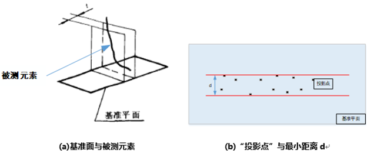

公差测量工具
1.功能概述
该工具主要完成平面度、圆度、直线度、平行度、垂直度、倾斜度、圆柱度、线轮廓度、面轮廓度等制造参数的公差测量；
2.使用场景
主要用于制造材料的尺寸误差测量项目上。
3.使用向导
图3_1 平面度测量流程
图3_2 平面度(圆度)测量流程
- 理想元素（平面、圆、圆柱）获取方法为用户自定义
Step1:添加点云文件、点云平面拟合工具、点云公差测量工具，并双击打开工具参数链，链接点云文件，如图3-3 所示；
Step2:数据链接中需要链接一个平面（圆形、圆柱）作为Step3的理想平面（圆形、圆柱）；
Step3:点击运行即可得到公差值，在自动table页中查看工具输出的平面度(圆度、圆柱度)；
图3_3 自定义获取基准平面(圆)流程
图3_4 测量直线度
- 平面约束的直线度
Step1:添加点云文件、点云平面拟合工具、点云公差测量工具，并双击打开工具参数链，链接点云文件，如图3-5所示；
Step2:数据链接中链接约束平面；
Step3:公差测量工具链接数据链，右击打开该工具高级属性界面，设置检测ROI，然后点击运行即可得到该ROI点云数据的直线度，在自动table页中查看工具输出的直线度；
图3_5 测量平面约束的直线度
- 方向约束的直线度
Step1:添加点云文件、元素生成工具、点云公差测量工具，并双击打开工具参数链，链接点云文件，如图3-6所示；
Step2:数据链接中链接约束方向；
Step3:公差测量工具链接数据链，右击打开该工具高级属性界面，设置检测ROI，然后点击运行即可得到该ROI点云数据的直线度，在自动table页中查看工具输出的直线度；
图3_6 方向约束–生成方向向量
图3_7 点云公差测量：平行度测量流程
基于基准直线的直线平行度
Step1:添加点云文件、点云元素生成工具、点云公差测量工具，并双击打开工具参数链，链接点云文件；
Step2:数据链接中链接所需基准直线；
Step3:公差测量工具链接数据链，右击打开该工具高级属性界面，设置检测ROI，然后点击运行即可得到该ROI点云数据的平行度，其中最大偏差与最小偏差差值取绝对值即为所求平行度；
基于基准平面的平面平行度
Step1:添加点云文件、点云元素生成工具、点云公差测量工具，并双击打开工具参数链，链接点云文件；
Step2:数据链接中链接所需基准平面；
Step3:公差测量工具链接数据链，右击打开该工具高级属性界面，设置检测ROI，然后点击运行即可得到该ROI点云数据的平行度，在自动table页中查看工具输出的平行度；
3.4 垂直度测量
基准面、平面型垂直度测量
Step1:添加点云文件、点云平面拟合工具、点云公差测量工具，并双击打开工具参数链，链接点云文件，如图3-8 所示；
Step2:数据链接中链接所需基准平面；
Step3:公差测量工具链接数据链，右击打开该工具高级属性界面，设置检测ROI，然后点击运行即可得到该ROI点云数据的垂直度，在自动table页中查看工具输出的垂直度；
图3_8 基准面→平面型垂直度测量流程
- 基准线、平面型垂直度测量
Step1:添加点云文件、元素生成工具、点云公差测量工具，并双击打开工具参数链，链接点云文件，如图3-9 所示；
Step2:数据链接中链接所需基准直线；
Step3:公差测量工具链接数据链，右击打开该工具高级属性界面，设置检测ROI，然后点击运行即可得到该ROI点云数据的垂直度，在自动table页中查看工具输出的垂直度；
图3_9 基准线→平面型垂直度测量流程
图3_10 基准线→圆柱型垂直度测量
3.5 倾斜度测量
线对线、平面型倾斜度测量 （表示检测的是线，基准是线，中心位置是平面）
如图3-11所示测量该物料标注处的倾斜度

 图3_11 物料测量项介绍
图3_11 物料测量项介绍
Step1:添加点云文件、点云平面拟合工具、元素生成工具、点云公差测量工具，并双击打开工具参数链，链 接点云文件，如图3-12 所示；
Step2:设置基准直线、投影基准面和倾斜度理论值；
Step3:公差测量工具链接数据链，右击打开该工具高级属性界面，设置检测ROI，然后点击运行即可得到该ROI点云数据的倾斜度，在自动table页中查看工具输出的倾斜度；
图3_12 线对线、平面型倾斜度测量流程
- 线对面、平面型倾斜度测量（表示检测的是线，基准是面，中心位置是平面）
- 线对面、圆柱型倾斜度测量（表示检测的是线，基准是面，中心位置是圆柱轴线）
- 面对线、平面型倾斜度测量（表示检测的是面，基准是线，中心位置是平面）
面对面、平面型倾斜度测量（表示检测的是面，基准是面，中心位置是平面）
3.6 轮廓度测量
启用法向量 （输入的基准点集中的数据点必须包含法向量）
Step1:添加点云文件、点云平面拟合工具、元素生成工具、点云公差测量工具，并双击打开工具参数链，链接点云文件，如图3-13 所示；
Step2:数据链接中链基准点集；
Step3:点击运行即可得到轮廓度，在自动table页中查看工具输出的轮廓度；
图3_13 线对线、平面型倾斜度测量流程
- 不启用法向量 （输入的基准点集中的数据点可以不包含法向量）
4.常见问题
5.参数说明
输入参数（参数链）
| 参数名称 |
参数描述 |
| 标准平面 |
测量类型为平面度使用 |
| 标准圆形 |
测量类型为圆度下，用户自定义模式时使用 |
| 标准直线 |
测量类型为直线度下，用户自定义模式时使用 |
| 约束平面 |
测量类型为直线度下，直线度约束条件为指定平面约束时使用 |
| 约束方向 |
测量类型为直线度下，直线度约束条件为指定方向约束时使用 |
| 标准圆柱 |
测量类型为圆柱度下，用户自定义模式时使用 |
| 基准平面 |
测量类型为圆度下，非用户自定义模式时使用
测量类型为平行度下，基准直线+基准平面模式、基准平面模式使用
测量类型为垂直度下，基准面，平面型垂直度、基准面，圆柱型垂直度使用
测量类型为倾斜度下，线对面，平面型、面对面，平面型使用 |
| 基准直线 |
测量类型为平行度下，基准直线+基准平面模式、基准直线模式使用
测量类型为垂直度下，基准线，平面型垂直度使用
测量类型为倾斜度下，线对线，平面型、面对线，平面型使用 |
| 投影基准面 |
测量类型为倾斜度下，拟合方法选择不拟合时使用 |
| 基准平面1/2 |
测量类型为倾斜度下，线对面，圆柱型（表示检测的是线，基准是面，中心位置是圆柱轴线）时使用 |
| 倾斜度理论值 |
测量类型为倾斜度使用 |
| 基准点集 |
测量类型为线轮廓度/面轮廓度时使用 |
| 测量点集 |
测量类型为线轮廓度/面轮廓度时使用 |
输入参数（属性窗口）
| 参数名称 |
参数描述 |
| 公差测量类型 |
包括：平面度、圆度、直线度、 平行度、 垂直度、 倾斜度、 圆柱度、线轮廓图、面轮廓度 |
| 理想平面获取方法 |
指平面的拟合方法，包括：最小二乘法、最小包容法、用户自定义 |
| 理想圆获取方法 |
包括：最小二乘法、最小包容法、最小外接法、最大内切法、用户自定义 |
| 点云形状 |
包括：圆(默认)、圆弧或曲线、椭圆、散乱；理想圆获取方法为最大内切法时生效 |
| 理想直线获取方法 |
包括：最小二乘法、最小包容法、用户自定义 |
| 直线度约束条件 |
包括：无约束(对应公差带为圆柱区域)、指定平面约束(对应公差带为指定平面内的两平行直线之间的区域)、指定方向约束(对应公差带为给定方向上的两平行平面之间的区域） |
| 平行度模式 |
包括：基准直线+基准平面模式、基准直线模式、基准平面模式 |
| 垂直度模式 |
包括：基准面，平面型垂直度、基准线，平面型垂直度、基准面，圆柱型垂直度 |
| 倾斜度模式 |
包括：线对线，平面型（表示检测的是线，基准是线，中心位置是平面）、
线对面，平面型（表示检测的是线，基准是面，中心位置是平面）、
线对面，圆柱型（表示检测的是线，基准是面，中心位置是圆柱轴线）、
面对线，平面型（表示检测的是面，基准是线，中心位置是平面）、
面对面，平面型（表示检测的是面，基准是面，中心位置是平面） |
| 拟合方法 |
倾斜度下参数，包括：不拟合，此时需要设置投影基准面、最小二乘拟合 |
| 理想圆柱获取方法 |
包括：最小二乘法、最小包容法、用户自定义（由用户输入标准圆柱） |
| 启用法向量 |
开启法向量时，基准点集需要自带法向量 |
| 法向量下对齐模式 |
基准点集和测量点集尺寸要不小于2，基准点集需带法向量。对齐模式包括：不对齐模式，即直接计算标称点和实际点的轮廓度、最小二乘模式、矢量最小二乘模式、最小最大模式、矢量最小最大模式 |
| 无法向量下对齐模式 |
基准点集和测量点集尺寸要不小于2，基准点集无需带法向量。对齐模式包括：不对齐模式、最小二乘模式、最小最大模式 |
| 法向量下面轮廓度对齐模式 |
基准点集和测量点集尺寸要不小于7，，基准点集需带法向量。对齐模式包括：不对齐模式（直接计算标称点和实际点的轮廓度）、最小二乘模式、矢量最小二乘模式、最小最大模式、矢量最小最大模式、最小最大全局最优模式、矢量最小最大全局最优模式 |
| 无法向量下面轮廓度对齐模式 |
基准点集和测量点集尺寸要不小于7，，基准点集无需带法向量。对齐模式包括：不对齐模式（直接计算标称点和实际点的轮廓度）、最小二乘模式、最小最大全局最优模式 |
| ROI类型 |
指ROI的类型，包括：长方体、球体 |
| 系数补偿 |
对求得的平面度数值乘以系数，取值范围为[-1000000, 1000000] |
| 固定补偿 |
对求得的平面度数值进行补偿，取值范围为[-1000000, 1000000] |
| 公差值上/下限 |
设定公差的上下限数值，取值范围为[-1000000, 1000000]，且下限应小于等于上限 |
输入参数（高级界面）
高级界面参数与属性窗口参数一致，交互按钮如下：
| 按钮名称 |
参数描述 |
| 绘制ROI |
在高级界面图像中，相应位置点击并拖动鼠标即可绘制ROI |
输出参数（参数链）
| 参数名称 |
参数描述 |
| 平面拟合结果 |
输出拟合的平面 |
| 圆度拟合结果 |
输出拟合的圆 |
| 直线度拟合结果 |
输出拟合的直线度 |
| 圆柱度 |
输出拟合的圆柱体 |
| 公差测量结果（平面度/圆度/直线度等） |
公差测量结果 |
| 最小偏差 |
最小偏差值 |
| 最大偏差 |
最大偏差值 |
输出参数（输出窗口）
| 参数名称 |
参数描述 |
| 平面拟合结果 |
平面点，拟合平面经过的点
法向量，拟合平面的法向量
偏移量，拟合平面相对于0平面的偏移量
倾斜角，拟合平面法向量与Z轴的夹角
旋转角，拟合平面法向量在XOY平面的投影向量与X轴的夹角 |
| 圆度拟合结果 |
圆度拟合结果：圆心，点云数据拟合的圆的圆心三维坐标
圆度拟合结果：法向量，点云数据拟合的圆形状平面的法向量
圆度拟合结果：半径，点云数据拟合的圆的半径，单位：mm |
| 直线度拟合结果 |
直线度拟合结果：StarPoint，拟合直线的起点
直线度拟合结果：EndPoint，拟合直线的终点
直线度拟合结果：Direction，拟合直线的方向
直线度拟合结果：Tilt，倾斜角，拟合直线的方向向量与Z轴正方向的夹角
直线度拟合结果：Rotation，旋转角，拟合直线的方向向量在XOY平面投影向量与X轴的夹角 |
| 圆柱度 |
圆柱体：Pos，圆柱体中心位置的三维坐标
圆柱体：Normal，圆柱体底部平面法向量的方向
圆柱体：Radius，圆柱体中圆形半径 |
| 公差测量结果（平面度/圆度/直线度等） |
公差测量结果 |
| 刚性变换矩阵 |
面轮廓度下输出测量点集与基准点集之间转换矩阵 |
| 最小偏差 |
最小偏差值 |
| 最大偏差 |
最大偏差值 |
| 执行结果 |
工具执行结果 |
| 执行时间 |
工具执行时间 |
6.示例工程
参见“\Samples\3D\点云\公差测量工具.gvp”。
7.特殊说明
算法原理说明
1、平面度控制：限定一个表面允许的不平误差的形位公差。
平面度公差带：两个平行平面，所有元素落在中间。公差带的第一个平面由被控表面上的三个最高点组成，第二个平面是偏离第一平面，控制公差值距离的平行平面。如下图7-1所示，平面度的公差带为距离0.2mm的两个平行平面；
图7_1 平面度原理
2、圆度误差：在垂直于回转体轴线截面上的轮廓对其理想圆的变动量，如下图7-2所示；
图7_2 圆度原理
3、直线度是表示零件上的直线要素保持理想直线的状态，即通常所说的平直程度。直线度公差是实际线对理想直线所允许的最大变动量；凌云光公差测量算法支持GB/T1182-2018中规定的三种公差(即无约束公差类型、平面约束公差类型和方向约束公差类型)。
图7_3 直线度
无约束的直线度：输入点云数据，获取理想直线，计算点云的公差带圆柱进而求解直线度和最大/小偏移量；
平面约束的直线度：输入点云数据，获取理想直线，将点云和直线投影到指定平面，在平面内计算直线度和最大/小偏移量；
方向约束的直线度：输入点云数据，获取理想直线，计算点云在指定方向上的极限距离进而求解直线度和最大/小偏移量；
4、平行度误差是被测实际要素对其平行于基准的理想要素的变动量。平行度的测量包括面对面平行度、线对线平行度测量。测量的方法主要有直接比较法、坐标法、尺寸差法、水平仪法和光轴法。同时，平行度是一个表面，中心线/面精确地平行于一个基准。只表示方向，不定位置。平行度是方向公差。
图7_4 平行度原理
公差测量工具中平行度的计算形式有3种：
基于基准直线+基准平面的直线平行度计算原理：将点云数据和基准直线投影到基准平面上，计算投影数据点到投影直线上方的最大距离和直线下方的最大距离的和作为点云数据的平行度，其原理示意图如下图7_5所示。
图7_5 基于基准直线+基准平面的直线平行度
基于基准直线的直线平行度计算原理：以基准直线的方向向量为约束条件获取点云数据的拟合直线，根据拟合直线的方向获取点云数据的最小外接圆柱，将最小外接圆柱所在圆的直径作为点云数据的平行度，其原理示意图如下图7_6所示。
图7_6 基于基准直线的直线平行度
基于基准平面的平面平行度计算原理：以基准平面法向量方向为约束条件获取点云数据的拟合平面，计算点云数据到拟合平面上方的最大值和拟合平面下方的最大值的和作为点云数据的平行度，其原理示意图如下图7_7所示。
图7_7 基于基准平面的平面平行度
5、垂直度：表示线元素、表面、中心平面、相切平面或者轴线相对基准在基本角度90°（垂直）方向上的变动程度。
基准面，平面型：如图7_8所示，将被测元素对应的点云沿基准面的法向投影到平面，计算投影点的最小包容距离d，作为垂直度。

图7_8 基准面，平面型的垂直度
基准线，平面型：如图7_9所示，被测元素对应点云的中心与基准线方向形成中心平面，计算点云到中心平面的最大最小距离d1、d2，以d1-d2作为垂直度。
图7_9 基准线，平面型的垂直度
基准面，圆柱型：如下图7_10所示，将被测元素对应的点云沿基准面法向投影到基准面，计算投影点的最小外接圆直径d，作为垂直度。
图7_10 基准面，圆柱型的垂直度
6、倾斜度：是指一个平面（或一条轴线）相对于另一个平面（或一条轴线）成一定倾斜角度的情况，其倾斜关系由一公差值来约束；在倾斜度的概念中需要注意，对于倾斜度评价的对象和基准，都可以是平面，也可以是轴线。对于倾斜度的公差带形状，可以是两个平行平面，也可以是圆柱形公差带，具体要看被测要素是什么，同时还要看倾斜度是哪个视图方向；倾斜度公差有三大要素：公称角度、参考基准和公差值。公称角度也叫参考角度，是指被测要素相对于基准的理论角度，应该是一个角度尺寸；参考基准是指被测要素的倾斜度是相对于哪个基准的角度；公差值是倾斜度公差带的大小，公差带平行平面间的距离或者圆柱形公差带的直径，所以公差值是一个大小尺寸，不是角度，需要和上面的公称角度做区分。
实际上，垂直度、平行度是倾斜度的特殊形式，三者的调用是一样的。倾斜度可称得上是定向控制中的父系，垂直度和平行度派生于倾斜度，也就是说倾斜度不控制两种特殊的定向角90°（垂直）和0°（平行）。倾斜度约束了面、中心面或轴相对于一个基准面、中心面或轴成一定的倾斜度的公差（注意这里的联合倾斜度控制的角度尺寸是一个公称尺寸）。如果有尺寸公差共同约束，倾斜度公差常被用来作为位置控制的加严要求。倾斜度的公差带通常是两个有规定公差值间距的平行面，也有圆柱面公差带的情况，并且需要不止一个基准来定位。也可能这个公差带是由两条平行线组成的，并且在公差控制框下说明为“每一个线元素”。不管以上哪一种方式，定向公差带的角度值必须为一个公称尺寸（没有公差）。
公差测量工具中倾斜度的测量方法共有5中模式：
线对线，平面型：检测对象是线、基准是线的平面倾斜度，根据国标“被测线应投影到包含基准轴线并平行于被测轴线的平面上，公差带是相对于投影到该平面的线而言”，如图7_11所示，公差带是距离t对应的两个平面；
图7_11 线对线，平面型的倾斜度
线对面，平面型：检测对象是线、基准是面的平面倾斜度；
图7_12 线对面，平面型的倾斜度
线对面，圆柱型：检测对象是线、基准是面的圆柱型倾斜度；
图7_13 线对面，圆柱型的倾斜度
面对线，平面型：检测对象是面、基准是线的平面倾斜度；
图7_14 面对线，平面型的倾斜度
面对面，平面型：检测对象是面、基准是面的平面倾斜度；
图7_15 面对面，平面型的倾斜度
注：角度a是指定的理论正确角度，距离t是公差带指定的合格倾斜度值；
7、圆柱度是指实际圆柱相对其理想圆柱的变动量，用于评价实际圆柱的形状误差。圆柱度公差带指的是两同轴圆柱之间的区域，圆柱度主要用于三维点云测量阶段。
最小二乘：点到拟合圆柱面的距离平方和最小；
最小包容：点到拟合圆柱面的最大距离与最小距离之差最小；
8、线轮廓度首先将输入点云沿投影方向投影为二维点，根据四种对齐模式：最小二乘、矢量最小二乘、最小最大与矢量最小最大将测量点云与标称点云进行对齐。其中最小二乘与矢量最小二乘对齐将测量点云与标称点云距离之差的和最小化；最小最大与矢量最小最大将测量点云与标称点云最大距离最小化。点云对齐之后求得测量点云与标称点云的法向距离最大值的两倍作为最终线轮廓度值输出。
最小二乘：最常用的模式，根据最小化测量点集与标称点集的距离平方和原则进行点集对齐，常用于形状规则的特征如圆形、圆柱形等，不适用复杂形状特征，如曲面等；
矢量最小二乘：与最小二乘类似，区别是这里使用的距离为投影至标称法向量的矢量距离，适用于圆形、圆柱形或复杂的曲面等；
最小最大：最小化测量点集与标称点集中的最大距离，该模式容易受噪声影响，不适用与复杂曲面，但求出的轮廓度值比最小二乘小，符合轮廓度的定义；
矢量最小最大：与最小最大类型，这里最小化测量点集与标称点集中的最大投影(沿矢量方向)距离，求出轮廓度值比矢量最小二乘小，但受噪声影响较大。
9、面轮廓度:基于三维点云进行计算，根据六种对齐模式：最小二乘、矢量最小二乘、最小最大、矢量最小最大、全局最优、矢量全局最优将测量点云与标称点云对齐得到刚体变换关系。测量点经过刚体变换得到变换点，利用变换点、标称点、标称点法向、计算变换点到标称点的法向长度，得到各点偏差，各点偏差绝对值最大值的2倍作为最终面轮廓度。最小二乘、矢量最小二乘、最小最大与矢量最小最大与线轮廓度一致。
全局最优：算法内部综合最小二乘与最小最大结果获得最优面轮廓度值；
矢量全局最优：算法内部综合矢量最小二乘与矢量最小最大结果获得最优面轮廓度值。